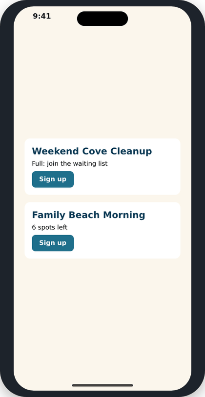

📱 Lesson 1.1: How React Native Works
Picture a Saturday morning on the coast. A volunteer pulls out a phone on the sand, finds today's cleanup, checks in, and starts counting bottle caps and fishing line, with one bar of signal and gloves on. The app in that hand is what you build in this course, and you build it with the React and TypeScript you already know. This first lesson shows you what really happens when React runs on a phone: there is no browser and no DOM, your components become the phone's own native controls, and a framework called Expo takes care of the parts that used to make mobile development hard. By the end you will have your first React Native component running, without installing anything.
🎯 Learning Objectives
By the end of this lesson, you will be able to:
- Explain how React Native turns your components into native views, and why there is no DOM on a phone
- Describe the New Architecture in plain words: Hermes, JSI, the Fabric renderer and native modules
- Sort what carries over from React on the web and what changes on a phone
- Say what Expo adds (the CLI, the SDK, Expo Router, Expo Go, development builds, EAS) and when each one is used
- Describe the Shoreline Crew phone app and how it shares an API and types with Shoreline Crew HQ
In This Lesson
👋 Welcome: Your React, on a Phone
React Native is React for apps that run on iPhones and Android phones. You still write components, pass props, keep state and use hooks, in TypeScript. What is different is what those components turn into: not HTML in a browser, but the same buttons, text and scrolling lists that apps written in Swift or Kotlin use. One codebase gives you both platforms, and most of your code is shared between them.
It is a skill worth having:
- For your career: React Native is used in large, well-known apps and by many smaller teams that cannot afford separate iOS and Android teams. For a React developer it is the shortest path to "I build mobile apps too".
- For the people you build for: some things only a phone can do well: work on the beach without a laptop, take a photo of what was collected, remind you before a cleanup, know where you are.
- For the code you already wrote: in the React + TypeScript course you built Shoreline Crew HQ. Its types, its API client and its data habits come with you; this course shows exactly which parts.
✅ You are in the right place
This course assumes you know React and TypeScript (the way the React + TypeScript course teaches them) and nothing about mobile development. You do not need to know Swift, Kotlin, Xcode or Android Studio, and you do not need a Mac. If the word "native" sounds intimidating, it will feel ordinary by the end of Module 2.
📱 Native Views, Not a DOM
On the web, React's job ends at the DOM: it creates and updates HTML elements, and the browser draws them. A phone app has no browser and no DOM. Every app on your phone is built from the operating system's own building blocks: on Android, views such as TextView and ScrollView; on iOS, views such as UILabel and UIScrollView. They are called native views, and they are why apps feel the way they feel: the scrolling bounce, the text selection handles, the screen reader support.
React Native gives you components that stand for those native views. Here is a small component for a Shoreline Crew cleanup, the kind you will type in this lesson's project. Read it as a React developer, and notice which parts are new:
import { useState } from 'react';
import { Pressable, StyleSheet, Text, View } from 'react-native';
interface CleanupCardProps {
title: string;
spotsLeft: number;
}
function CleanupCard({ title, spotsLeft }: CleanupCardProps) {
const [joined, setJoined] = useState(false);
const full = spotsLeft === 0;
return (
<View style={styles.card}>
<Text style={styles.title}>{title}</Text>
<Text>{full ? 'Full: join the waiting list' : `${spotsLeft} spots left`}</Text>
<Pressable
accessibilityRole="button"
onPress={() => setJoined(!joined)}
style={({ pressed }) => [styles.button, pressed && styles.pressed]}>
<Text style={styles.buttonText}>{joined ? "You're in!" : 'Sign up'}</Text>
</Pressable>
</View>
);
}
export default function App() {
return (
<View style={styles.screen}>
<CleanupCard title="Weekend Cove Cleanup" spotsLeft={0} />
<CleanupCard title="Family Beach Morning" spotsLeft={6} />
</View>
);
}
const styles = StyleSheet.create({
screen: { flex: 1, justifyContent: 'center', gap: 16, padding: 24, backgroundColor: '#fbf6ec' },
card: { gap: 8, padding: 16, borderRadius: 12, backgroundColor: '#ffffff' },
title: { fontSize: 20, fontWeight: 'bold', color: '#0b3954' },
button: { alignSelf: 'flex-start', paddingVertical: 10, paddingHorizontal: 16, borderRadius: 8, backgroundColor: '#1f6f8b' },
pressed: { opacity: 0.7 },
buttonText: { color: '#ffffff', fontWeight: 'bold' },
});Almost everything is familiar: an interface for the props, a function component, useState, a ternary in the JSX, a list of components in App. The new parts are few, and they are the heart of this course:
<View>is the box everything goes in (where you would use a<div>). On Android it becomes a native view, on iOS aUIView.<Text>holds all text. There is no "loose" text in React Native: a string directly inside a<View>is an error on a phone.<Pressable>is how you make something tappable, withonPressinstead ofonClickand apressedflag for the "finger is down" look.StyleSheet.createreplaces CSS: style objects with camelCase names (backgroundColor), numbers without units, and no selectors or cascade. Lesson 2.1 covers it properly.
Compare the web version you met in the first lesson of the React + TypeScript course (shortened there to the text parts):
interface CleanupCardProps {
title: string
spotsLeft: number
}
export function CleanupCard({ title, spotsLeft }: CleanupCardProps) {
return (
<article>
<h2>{title}</h2>
<p>{spotsLeft === 0 ? 'Full: join the waiting list' : `${spotsLeft} spots left`}</p>
</article>
)
}Same props, same logic, different building blocks. That is the pattern of the whole course: your React thinking carries over; the platform vocabulary changes.
💡 Mental model: one script, two crews
Think of React as the person who writes the plan for the day: who stands where, what each sign says. On the web, the browser's crew builds that plan out of HTML elements. React Native hands the same kind of plan to a different crew: Android's or iOS's own, who build it out of native views. You write the plan in React either way. You just learn the second crew's vocabulary: View instead of div, Text instead of p.
Expo can also show your app in a web browser (a web preview, handy for a quick look). There, a library called react-native-web plays the browser's crew and turns the same components back into HTML. This is the HTML the web preview made for the second card above, with line breaks added so you can read it:
Expected output (the web preview's HTML for one card)
<div class="css-g5y9jx r-14lw9ot r-1q9bdsx r-1cmwbt1 r-nsbfu8">
<div dir="auto" class="css-146c3p1 r-1eiytwb r-adyw6z r-vw2c0b">Family Beach Morning</div>
<div dir="auto" class="css-146c3p1">6 spots left</div>
<button role="button" tabindex="0" class="css-g5y9jx r-1loqt21 r-1otgn73 r-k200y r-1eaa16r r-1xfd6ze r-ytbthy r-3pj75a" type="button">
<div dir="auto" class="css-146c3p1 r-jwli3a r-vw2c0b">Sign up</div>
</button>
</div><View> became a <div>, each <Text> a <div dir="auto">, the <Pressable> a <button>, and the StyleSheet became generated CSS classes. On a phone none of this exists: the same code creates native views directly. That is why this course uses the web preview for quick checks but always tells you when something only a real phone can show.
⚙️ The New Architecture in Plain Words
Your app is a real app, installed on the phone like any other. Inside it, two worlds cooperate: your JavaScript, and the platform's native code. How they talk to each other is what people mean by React Native's architecture. You do not need to master it to build apps, but knowing the four names below makes error messages, documentation and job interviews much less mysterious:
- Hermes is the JavaScript engine inside your app, built by the React Native team for fast start-up on phones. Your TypeScript is turned into JavaScript (and, in release builds, into Hermes bytecode) and runs there, not in a browser.
- JSI (the JavaScript Interface) lets JavaScript call native code directly and hold on to native objects, instead of sending messages back and forth.
- Fabric is the renderer: it takes the result of your components (what React worked out should be on screen) and creates or updates the native views.
- Native modules (TurboModules) give JavaScript the phone's features: the camera, location, secure storage, haptics. They load only when your app first uses them.
Together these are called the New Architecture, and in current React Native it is the only one. You will still find older articles and answers that describe "the bridge": a message queue that every call between JavaScript and native code had to cross, which made some things slow. That design was replaced; when a tutorial blames the bridge, check its date.
⚠️ Old tutorials are everywhere
React Native and Expo move quickly: the course uses Expo SDK 58 with React Native 0.88. Code written a few years ago may import packages that no longer exist, use components that were replaced, or describe setup steps that are no longer needed. When something you found online does not match this course, the course's version was checked on the current tools.
💡 Mental model: the radio and the field kit
Your JavaScript is the crew leader with a radio (JSI) who can talk to the specialists directly. The specialists are the native modules in the app's field kit: the camera person, the map reader, the one who keeps the keys. The kit is packed when the app is built. If you need a specialist who is not in the kit, you have to repack it, which is exactly what a development build does (more on that below).
🔁 What Carries Over and What Changes
Here is the honest map of what you already know and what is new. Each new item has its own lesson:
| Carries over unchanged | Changes on a phone |
|---|---|
| Components, props, children, composition | HTML elements become core components (View, Text, Image, Pressable, TextInput): Module 2 |
| State, every hook, custom hooks, context | CSS becomes StyleSheet objects; flexbox is the only layout and its default direction is a column: Lessons 2.1 and 2.2 |
| TypeScript, your types and type guards | Long lists need virtualized lists (FlatList, FlashList): Module 3 |
| TanStack Query, Zustand, React Hook Form with Zod | No URL bar: navigation is a stack of screens, tabs and modals (Expo Router): Module 4 |
| The shoreline-api and its JSON | localhost is the phone, not your computer; the network comes and goes; storage is async and secure storage is separate: Module 5 |
| Testing ideas (render, query by role and text, mock the API) | The camera, location and notifications need permission; phones have notches, keyboards and accessibility settings; apps ship through stores: Modules 6 to 9 |
Notice how much of the left column is the hard part of React. You already learned to think in components and data; now you learn a new set of building blocks and a new set of constraints.
🧰 Expo: The Framework Around React Native
React Native on its own is a library: it renders components to native views. Building a whole app also needs a project setup, a development server, access to device features, navigation, builds for two app stores and a way to ship updates. Expo is the framework that provides all of that, and the React Native documentation recommends starting new apps with a framework like it. You will use these parts of Expo:
- The Expo CLI (
npx expo …): creates and starts projects, installs compatible packages, bundles your JavaScript. - The Expo SDK: a set of native modules with one consistent API (
expo-camera,expo-location,expo-notifications…), released together and numbered (this course uses SDK 58). - Expo Router: navigation from files, like the routes you know from the web.
- Expo Go: a free app for your phone that runs your project while you develop it: scan a QR code and your app appears, and it reloads when you save.
- Development builds: your own version of an Expo Go-style app with exactly the native modules your project needs. Expo Go only contains the Expo SDK's modules; when you add a library with other native code, you make a development build (Lesson 9.2).
- EAS (Expo Application Services): cloud services that build your app for the stores (including iOS, without a Mac), send updates and submit to the stores. There is a free plan (Module 9).
While you build, your code lives on your computer and the Expo CLI serves it. Your phone (or an emulator, or the web preview) loads it from there, and the app talks to the course's API:

💡 "Expo or React Native?" is the wrong question
An Expo app is a React Native app: Expo is the framework around it, the way Next.js is a framework around React. You may read about "bare" React Native or "ejecting" from Expo; today an Expo project can include any native code through development builds and config plugins, so there is nothing to eject from. You write the same React Native code either way.
🌊 The Course Project: Shoreline Crew
In the React + TypeScript course you built Shoreline Crew HQ, the web app where the organizers of Shoreline Crew (a fictional volunteer group that cleans up six beaches) plan cleanups and manage sign-ups. Now you build the app the volunteers carry: Shoreline Crew, for iPhone and Android.
| Screen | What a volunteer does there | What the phone adds |
|---|---|---|
| Cleanups | Browse upcoming cleanups, see which ones have spots | A fast scrolling list, pull to refresh |
| Cleanup details | Read the meeting point, sign up or cancel, share it with a friend | A map, the share sheet, haptic feedback |
| My cleanups | See your sign-ups and your place on a waiting list | A reminder notification before the day |
| Check in | On the day, enter the organizer's code | Your location, to confirm you are at the beach |
| Logbook | Log what you collected, by kind of debris | Works offline and syncs later; photos from the camera |
| Profile | Sign in and out, choose a theme | The session kept in the phone's secure storage |
The app talks to the same shoreline-api as Shoreline Crew HQ: the small mock back end that runs on your computer with one command and comes with sample data around today's date. It was designed with this app in mind: volunteers can sign up and check in, debris logs carry an id made by the phone so that sending one twice (after a dropped connection) never creates a duplicate, and an option lets your phone reach it over Wi-Fi. The API's TypeScript types come with it, so the phone and the web app agree on every field.
💡 Why build the same project twice?
Real teams rarely start a phone app from nothing: there is usually a web app, an API and a lot of code already. Building the second app for the same project shows you, concretely, which code you can share between web and mobile (types, validation, data fetching logic) and which you rewrite (the screens). That judgment is one of the most useful things a React developer moving to mobile can bring to a team.
🌱 How to Learn in This Course
Moving to a new platform can make an experienced developer feel like a beginner again. That feeling is normal, and it passes quickly:
- Red screens are feedback, not failure. React Native shows errors as a full red screen on the phone. It looks dramatic; it is just a stack trace with a better font. Read it from the top, the way you learned to read TypeScript errors.
- Add the word "yet". "I don't understand native modules" becomes "I don't understand native modules yet". The course introduces each idea when you need it and comes back to it.
- Plateaus are normal. Some lessons will click at once; others (permissions, offline sync, store builds) take a second pass. This is a marathon, not a sprint: steady practice beats long cramming sessions.
- Use real devices when you can. The web preview is quick, but a phone in your hand teaches you things no browser can: how big a finger is, how the keyboard covers a form, how a slow network feels.
How each lesson works:
- Every lesson adds to the same app, and each one with code has a 📦 download of its starting and finished code.
- Every code sample was type-checked, linted, tested where it has tests, and bundled for web, Android and iOS on the course's stack; terminal output in the lessons is what a real terminal printed. Steps that only a real phone can show are written from the official documentation and say so.
- Every lesson ends with a project step, optional exercises, a five-question quiz and a journal prompt. Writing down what you learned is one of the most reliable ways to remember it.
⚠️ Common Mistakes
⚠️ Expecting HTML and CSS to work
A <div>, a className or a CSS file does nothing on a phone. Reach for the core components and StyleSheet; the React Native Cheat Sheet lists the web-to-native swaps.
⚠️ Treating the web preview as a phone
The web preview is a translation into HTML. It cannot show the native look of controls, the camera, notifications or how gestures feel. Use it for quick layout and data checks; confirm on a phone (or an emulator) before you call something done.
⚠️ Following an old tutorial step by step
Global expo-cli, react-native init, "ejecting", TouchableOpacity everywhere and "the bridge" are signs of an older guide. Check the date and compare with the course before you install anything it suggests.
⚠️ Thinking you need a Mac or native languages first
You do not. Expo Go runs on any recent phone, the Android emulator runs on Windows, macOS and Linux, and EAS builds iOS apps in the cloud. Swift and Kotlin are useful later, for writing your own native modules; this course never requires them.
🛠️ Project: Your First Native Component
You will run the cleanup cards from this lesson in Expo Snack, an official online editor for React Native, then compare them with their web twin, map the Shoreline Crew app, and get your phone ready for the next lesson. Everything happens in your browser.
Step 1: Open Expo Snack (5 min)
- Open Expo Snack. You do not need an account. On the left is the file list, in the middle the editor with a starter
App.js, and on the right a preview with the tabs My Device, Android, iOS and Web. - Select the Web tab of the preview. (The Android and iOS tabs run your code on a phone in the cloud, and may ask you to wait in a queue.)
🧩 Version note: Snack's SDK
The version menu at the bottom of Snack shows its Expo SDK (it offered SDK 54 at the time of writing). The course uses SDK 58 on your own computer from Lesson 1.2. The core components in this project work the same in both.
Step 2: Make it TypeScript and type the cards (20 min)
- In the file list, right-click App.js and choose Rename to App.tsx. Snack understands TypeScript.
- Click in the editor, select everything (Ctrl+A, or ⌘ Cmd+A on a Mac) and delete it.
- Type the
CleanupCardcode from the native views section (typing it, rather than pasting, is how the new names stick). The preview updates as you type and settles when the code is complete. - Check the status line at the bottom of Snack: it should say No errors. If it shows an error, click it: it names the line.

Step 3: Change it and watch (10 min)
- Click Sign up on the first card. The button says You're in!; click again and it switches back. That is
useState, exactly as on the web. - In
App, add a third card:<CleanupCard title="Jetty Rocks Deep Clean" spotsLeft={12} />. It appears below the others. - In
styles.screen, changejustifyContent: 'center'tojustifyContent: 'flex-start'. The cards move to the top: the screen is a flex container whose main direction is a column (Lesson 2.2). - Change
gap: 16togap: 40and back. Notice there are no units: React Native sizes are numbers.
Step 4: Compare it with the web version (10 min)
Put the two CleanupCard versions from the native views section side by side and write a short list in your notes: every line that is different, and what replaced what. Then mark each item as "vocabulary" (a different name for the same idea, such as div to View) or "new idea" (something the web version did not need, such as Pressable's pressed style). Keep the list: it is the start of your own cheat sheet.
Step 5: Map the Shoreline Crew app (15 min)
On paper or in a document, draw a phone-shaped box for each screen in the project table: Cleanups, Cleanup details, My cleanups, Check in, Logbook and Profile. In each box, write:
- the data it shows (cleanup title, date, spots left, your sign-up status …)
- which phone feature it uses, if any (location, camera, notifications, storage, haptics)
- what should happen when the phone has no signal on that screen
The last question is the one web developers rarely ask, and the one this app has to answer well.
Step 6: Get your phone ready (5 min)
- If you have an iPhone or Android phone, install Expo Go from the App Store or Google Play (it is free). Do not open a project yet: Lesson 1.2 does that with your own app.
- Check that your phone and your computer can use the same Wi-Fi network. No phone, or no shared network? That is fine: Lesson 1.2 also shows the Android emulator and the web preview.
✅ Project Completion Checklist
- ☐ I renamed Snack's file to
App.tsx, typed theCleanupCardcode and saw "No errors" - ☐ I pressed Sign up and saw the state change, and I added a third card
- ☐ I changed a style and saw the layout follow
- ☐ I listed every difference between the web and native versions of the card
- ☐ I mapped the six Shoreline Crew screens to their data, phone features and offline behavior
- ☐ I installed Expo Go (or chose the emulator or web preview for Lesson 1.2)
🏋️ Hands-on Exercises
Optional, but recommended: each one takes five to fifteen minutes.
🏋️ Exercise 1: Carries over or changes?
Sort each item into "works the same in React Native" or "changes on a phone": (a) useEffect, (b) localStorage, (c) an interface for props, (d) onClick, (e) useQuery from TanStack Query, (f) a CSS :hover style, (g) <img src="…">, (h) a Zod schema.
💡 Hint
Ask of each one: is it part of React and TypeScript, or part of the browser?
✅ Solution
The same: (a), (c), (e), (h): they are React, TypeScript or plain JavaScript libraries. Changes: (b) localStorage is a browser API (AsyncStorage and SecureStore, Lesson 5.3); (d) onClick becomes onPress; (f) phones have no hover, Pressable has a pressed state instead; (g) <img> becomes an Image component with source and a size (Lesson 2.3).
🏋️ Exercise 2: Which part of the architecture?
For each situation, name the part from the New Architecture section that is involved: (1) your CleanupCard function runs and returns JSX; (2) a Text appears on an Android screen as a native text view; (3) your code asks for the phone's location; (4) a release build ships your JavaScript as bytecode.
💡 Hint
The four names are Hermes, JSI, Fabric and native modules. One situation involves two of them.
✅ Solution
(1) Hermes runs your JavaScript (and React inside it). (2) Fabric, the renderer, creates the native view. (3) A native module (expo-location), reached from JavaScript through JSI. (4) Hermes: release builds contain Hermes bytecode, so the app does not have to parse JavaScript at start-up.
🏋️ Exercise 3: A full cleanup should look full (Stretch)
In Snack, make a full cleanup stand out: when spotsLeft is 0, show the "Full" line in bold coral (#b23a22, Shoreline Crew's error color) and make the button say Join the waiting list instead of Sign up.
💡 Hint
A style prop accepts false, so style={full && styles.full} applies the style only when full is true. The button text needs a second condition inside the first one.
✅ Solution
import { useState } from 'react';
import { Pressable, StyleSheet, Text, View } from 'react-native';
interface CleanupCardProps {
title: string;
spotsLeft: number;
}
function CleanupCard({ title, spotsLeft }: CleanupCardProps) {
const [joined, setJoined] = useState(false);
const full = spotsLeft === 0;
return (
<View style={styles.card}>
<Text style={styles.title}>{title}</Text>
<Text style={full && styles.full}>
{full ? 'Full: join the waiting list' : `${spotsLeft} spots left`}
</Text>
<Pressable
accessibilityRole="button"
onPress={() => setJoined(!joined)}
style={({ pressed }) => [styles.button, pressed && styles.pressed]}>
<Text style={styles.buttonText}>
{joined ? "You're in!" : full ? 'Join the waiting list' : 'Sign up'}
</Text>
</Pressable>
</View>
);
}
export default function App() {
return (
<View style={styles.screen}>
<CleanupCard title="Weekend Cove Cleanup" spotsLeft={0} />
<CleanupCard title="Family Beach Morning" spotsLeft={6} />
</View>
);
}
const styles = StyleSheet.create({
screen: { flex: 1, justifyContent: 'center', gap: 16, padding: 24, backgroundColor: '#fbf6ec' },
card: { gap: 8, padding: 16, borderRadius: 12, backgroundColor: '#ffffff' },
title: { fontSize: 20, fontWeight: 'bold', color: '#0b3954' },
button: { alignSelf: 'flex-start', paddingVertical: 10, paddingHorizontal: 16, borderRadius: 8, backgroundColor: '#1f6f8b' },
full: { color: '#b23a22', fontWeight: 'bold' },
pressed: { opacity: 0.7 },
buttonText: { color: '#ffffff', fontWeight: 'bold' },
});Style arrays and conditional styles ([styles.button, pressed && styles.pressed]) are how React Native does what CSS classes and pseudo-classes do on the web. Lesson 2.1 builds on exactly this.
🎯 Quick Quiz
🎯 Check Your Understanding
Question 1: The Shoreline Crew app shows a <View> on an Android phone. What does the phone actually draw?
Question 2: Where does your TypeScript code run when the app is on a phone?
Question 3: Which piece of Shoreline Crew HQ can the phone app use as it is?
Question 4: You want a map library whose native code is not included in Expo Go. What do you need?
Question 5: The cleanup cards look right in the web preview. What can the web preview not tell you?
❓ Common Questions at This Stage
Do I need a Mac or an iPhone?
No. On Windows or Linux you develop with Expo Go on any phone you have, or the Android emulator. iPhone owners can use Expo Go on their iPhone from any computer. Only the iOS Simulator needs a Mac, and EAS builds iOS apps in the cloud. Steps that need Apple hardware are marked, with what you would see.
Is a React Native app just a website inside an app?
No. A website inside an app (a WebView) draws HTML; React Native draws the platform's native views, which is why it looks and feels like other apps. The web preview in this course goes the other way: it turns your native components into HTML so you can check them in a browser.
Should I learn Swift or Kotlin first?
Not for this course. Many React Native developers never write native code; others learn some later to build their own native modules. Understanding the architecture from this lesson is enough to read native error messages and documentation.
What about Flutter or other cross-platform tools?
Flutter is a strong alternative that uses its own language (Dart) and draws its own widgets instead of the platform's. React Native lets you use React and TypeScript, share code and knowledge with your web apps, and use the platform's own controls. For a React developer that is usually the deciding argument.
Why is the project in Snack plain components, without Expo Router or the API?
Snack is a quick place to try ideas without installing anything, and it is a step behind the course's SDK. From Lesson 1.2 on you work in a real project on your computer, with Expo Router, the API and your phone.
🌟 Going Further: Bonus Challenge
Read the React Native documentation page Core Components and Native Components. Its table lists, for each core component, the Android view and the iOS view it becomes, and the web element it resembles. Add the rows you did not know yet to the cheat sheet you started in Step 4, then compare your list with the course's React Native Cheat Sheet.
📓 Learning Journal
Today is your first entry. Keep a journal for the whole course: a notebook, a document, or a Markdown file in your project folder. Take five to ten minutes after every lesson and jot down:
- Key concepts you learned today
- Techniques that clicked (and the ones that have not, yet)
- Questions or confusion to look up or bring to the next session
- Ideas to try on your own
- Progress and feelings: how did this lesson go for you?
✍️ This lesson's prompt: Why do you want to build mobile apps? Describe one app you would love to have on your own phone: who would use it, where they would be when they open it, and one thing it must do even without a signal. Then write one sentence you want to be able to say at the end of this course ("I shipped…", "I can…").
📝 Lesson Summary
🎓 Key Takeaways
- React Native renders to native views, not to a DOM:
View,TextandPressablebecome the platform's own controls - All text lives in
<Text>, taps useonPress, and styles areStyleSheetobjects without units or a cascade - The New Architecture: Hermes runs your JavaScript, JSI connects it to native code, Fabric renders, native modules provide device features
- Your React and TypeScript knowledge carries over; the building blocks, layout, navigation, storage and the network change
- Expo is the framework around React Native: CLI, SDK, Router, Expo Go, development builds and EAS
- The web preview is a translation into HTML: useful for quick checks, not a phone
- You will build Shoreline Crew, the volunteers' app, against the same shoreline-api as Shoreline Crew HQ
| If you want to… | Go to |
|---|---|
| Try a React Native idea in the browser | Expo Snack |
| Look up the native version of a web element or CSS property | React Native Cheat Sheet |
| See what the API offers the phone app | Shoreline API Reference |
| Look up a new word (Hermes, Fabric, Expo Go…) | Glossary |
🏆 What You've Accomplished
- You can explain how React Native draws real native screens from React components
- You can name the parts of the New Architecture and recognize an outdated tutorial
- You ran your first React Native component, with state and styles, without installing anything
- You mapped the app you will build to its data, its phone features and its offline needs
🔭 Looking Ahead
In Lesson 1.2: Your Toolchain you set up your computer for mobile development: Node.js, VS Code, the shoreline-api running locally and a brand-new Expo project, Shoreline Crew, opened on your own phone with Expo Go (or in the Android emulator or the web preview). By the end, an edit you make on your computer appears on your phone in about a second.
📋 Before the Next Lesson
- Install Expo Go on your phone if you have one, and note your phone's operating system version
- Keep your Shoreline Crew screen map and your web-to-native list: you will add to both
- Write your first journal entry, if you have not yet
🌱 Encouragement for the Journey
You just ran a React Native component and understood what it turns into on a phone, which already puts you ahead of anyone who learned mobile development by copying old tutorials. Everything from here builds on React you already know: new building blocks, a few new constraints, and a phone in your hand that shows you your work. Welcome back to the crew, this time on the beach.